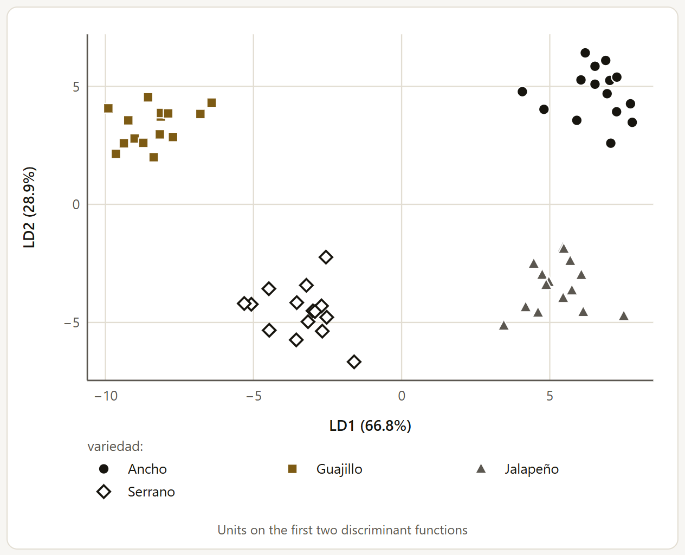
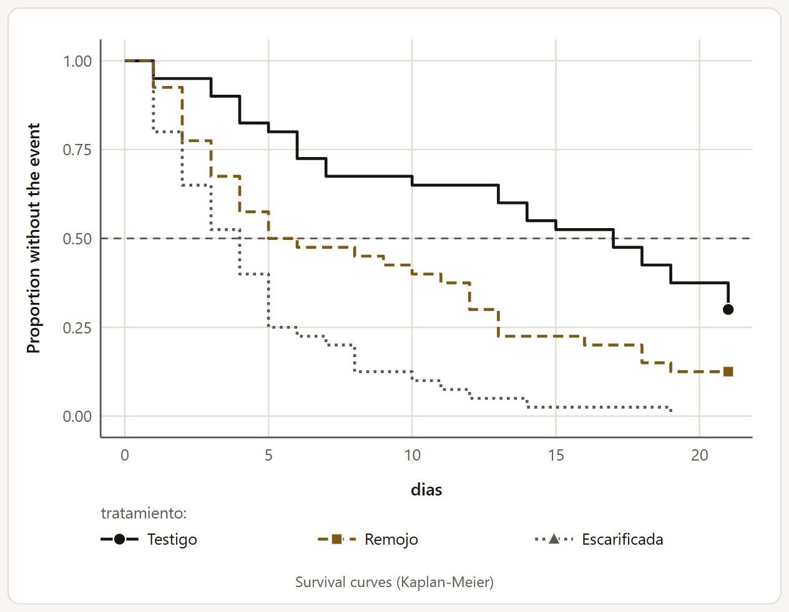
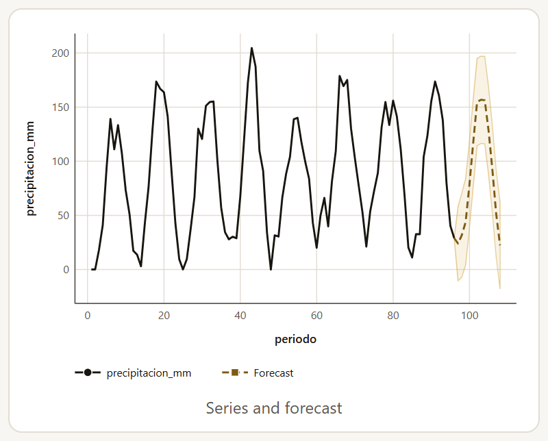

4.21Multivariate analysis
When several variables are measured at once on each unit (the length, width, weight and wall of a fruit), analyzing them one by one repeats tests and wastes the relationship among them. MANOVA tests the treatments on the set as a whole, and discriminant analysis looks for the combination of variables that best separates the groups. Both run in the browser, validated against R’s manova and summary.manova and against lda from the MASS package.
MANOVA
Choose the Response variables (2 to 10), the Treatment factors (up to 3, crossed), the Blocks (optional), the Main test and the Significance level. The main test is the one the conclusion uses: Pillai, the most robust and the default; Wilks; Hotelling-Lawley; or Roy, which gives an upper bound for F and an optimistic p. The MANOVA: the four tests table includes all four. The sums of squares are sequential (type I), as in summary.manova: the block enters first and then the factors, in the order of their columns in the table (not in the order in which you check them); with unbalanced data, that order changes the test of each term.
With four chili pepper varieties in three blocks, five fruits per plot, the variety changes the set of four measurements (Pillai = 2.668, F(12, 159) = 106.40, p < 0.001). The block is borderline: Pillai gives p = 0.063, and Roy, with its optimistic p, 0.005; that is why you should decide with the main test and not with the most favorable one. The traffic light checks that there are enough error degrees of freedom for the number of responses (green with at least three times as many; here, 54 for 4) and the equality of the covariance matrices with Box’s M test among the treatment combinations, without the blocks (χ²(30) = 30.13, p = 0.459). The other tables give the ANOVA of each response separately, Box’s M test group by group and the means of each factor; the plot shows the profile of the standardized means (with 12 levels or fewer).
The example has the five fruits of each plot in separate rows, and the MANOVA takes each fruit as a replicate: the error ends up with 54 degrees of freedom when the experiment has only 12 plots. This is the pseudoreplication that the method’s fact sheet warns about (chapter 9), and it makes the tests too optimistic. To test the varieties with the correct error, average the fruits of each plot in your spreadsheet and import the table of means (SigmaPro has no tool for averaging rows). The table below compares the two analyses.
| Each fruit as a replicate (60 rows) | Plot means (12 rows) | |
|---|---|---|
| Error | 54 df | 6 df |
| Variety | Pillai = 2.668, F(12, 159) = 106.40, p < 0.001 | Pillai = 2.969, F(12, 15) = 120.26, p < 0.001 |
| Block | Pillai = 0.258, F(8, 104) = 1.93, p = 0.063 | Pillai = 1.106, F(8, 8) = 1.24, p = 0.386 |
| Traffic light: degrees of freedom | Green: 54 df for 4 responses | Amber: 6 df for 4 responses |
| Traffic light: Box’s M | Green: χ²(30) = 30.13, p = 0.459 | Gray: with 3 plots per variety and 4 responses, no group has more units than variables, and the test is not calculated (its table does not appear either) |
The varieties differ anyway, but with the means the block is no longer borderline, and the traffic light calls for caution: with 6 error degrees of freedom, four responses are too many. With few plots, it is better to analyze fewer responses, the most important or the least redundant ones.
Below the plot, two buttons, CSV for PCAPro (principal components) and CSV for ClusteringPro (clustering), download only the variables of the analysis with their group (in the MANOVA, with the block and the factors), ready to open in those suite apps from their data block. At the foot of the result, the Continue in the LABG suite strip suggests the same two apps (section 10.2); its Send data to … button, in contrast, downloads the full table of the Data block (section 10.4).
Linear discriminant analysis
Choose the Groups to separate and the Variables that describe them (2 to 15). The result gives the discriminant functions with the proportion of the separation that each one explains, their coefficients, the group centroids and the cross-validated classification: each unit is classified with the function fitted without it, which gives an honest success rate (the one that uses the same data as the fit is optimistic). The traffic light checks that the smallest group has more units than variables, and the equality of the covariances among the groups (Box’s M), which also comes with its table.

With the chili peppers there are three functions; the first explains 66.8% of the separation and the second 28.9%. With cross-validation, all 60 fruits are assigned to their own variety (100%). Here each fruit is indeed a unit: what you want is to classify fruits.
The coefficients are not standardized: compare them only among variables on similar scales. The app warns about this when it names the variables with the most weight in the first function.
The suite strip proposes ClusteringPro, to look first for the natural groups in the data, and PCAPro; the two CSV buttons are the same as in the MANOVA.
4.22Power, replicates and sampling
Before the trial: how many replicates, how many plants or how many seeds you need to detect a difference that matters or to estimate with an acceptable error. Six of the eight methods of the Sample size, power and sampling family need no data. When data are loaded, they are in the catalog like any other method, with the No data needed mark; with an empty worksheet, the Calculate a sample size or power button of the Explore block enables them, and the catalog of the Analysis block then shows only this family.
The power calculations ask What do you want to calculate?: the sample size, the power of a given size or the effect that can be detected (the difference between means, the variation among the ANOVA means or the correlation; for two proportions, only the size or the power). They use the same formulas as R (power.t.test, power.anova.test, power.prop.test and pwr.r.test from the pwr package) and plot power against sample size. The Alternative hypothesis can be two-sided or one-sided; with a one-sided one, the app tests the positive direction, so the difference or the correlation must be written as positive numbers (with a negative number, the power comes out as 0% and the sample size makes no sense).
![The sample size calculation for a t test without data: the form with Sample size, Two independent groups, the difference of 0.5, the standard deviation of 0.4, the two-sided hypothesis, the power of 0.8 and the significance level of 0.05; the header of the result with What is this analysis? and Add to report; the conclusion, 12 units per group (exact n 11.09); the Chart theme selector; the curve of power by sample size, with the dashed lines at 0.8 and at 11.09; and below, the beginning of the parameters table](../img/en/b4-potencia.png)
| Method | With | Result |
|---|---|---|
| Means (t test) | Difference 0.5, SD 0.4, power 0.8 | 12 units per group (11.09) |
| ANOVA of several treatments | Means 4.2, 4.8, 5.1 and 5.6; error SD 0.6 | 5 replicates per treatment (4.915) |
| Two proportions | 65% versus 80% | 138 units per group (137.9) |
| Correlation | 40 pairs, power 0.8 | A correlation of 0.4265 can be detected |
| Replicates for an experiment | CV 12%, difference of 15% of the mean, 6 treatments in blocks | 11 replicates |
| Sample size to estimate | Proportion 0.3 with error ± 0.05, population of 900 | 238 units (323 without the finite population) |
In the ANOVA, the Expected treatment means (optional), separated by commas, replace the number of treatments and the variance of the means. To solve for Detectable variation among means, leave the means empty and enter the Treatments: in that mode the means are not used. With 4 treatments, 5 replicates, an error SD of 0.6 and a power of 0.8, a variance among means of 0.3349 can be detected (Cohen’s f = 0.8352); the R code leaves as NULL whatever is being solved for.
The replicates for an experiment use the formula of Cochran and Cox (1957) with the Expected coefficient of variation (%) from previous trials, the Difference to detect (% of the mean), the Treatments and the Design (randomized complete blocks or completely randomized). The error degrees of freedom depend on the replicates, so the app searches for them until the formula holds: the Search for the number of replicates table shows each step, and the plot compares the required replicates with the ones plugged in. In the ANOVA and in the replicates, the Continue in the LABG suite strip proposes AgriDesign to randomize the trial and draw its field layout.
The sample size to estimate asks What do you want to estimate? (a mean or a proportion), the expected variation, the acceptable error and the Population size (0 if very large). It uses Cochran’s (1977) formulas: n₀ = (z·S/e)² for the mean and n₀ = z²·p(1 − p)/e² for the proportion. With a finite population, the mean is corrected with n = n₀/(1 + n₀/N) and the proportion with n = n₀/[1 + (n₀ − 1)/N], because the variance of a proportion carries the factor (N − n)/(N − 1). In the example of the table, n₀ = 322.7 and n = 237.7, which is rounded up to 238. The plot shows how many units are needed for each error: halving the error quadruples the sample when the population is large.
Estimating from a sample
The other two methods analyze a sample already taken, in the Variable measured in the sample. Simple random sampling estimates the mean or the proportion (Estimate: automatic, which gives the proportion if the column is 0/1) and, with the Population size (0 if very large or unknown), the total, with the finite population correction; its plot shows how the interval narrows as the sample grows. Stratified sampling also asks for the Strata (orchards, fields, regions, soil types) and the Population size of each stratum (N_h), one field per stratum with all the units in it, not only those sampled. With Allocate a new sample of (optional), it proposes how to allocate it among the strata: proportional and Neyman allocation.
With the avocado from three orchards (1,580 trees), the simple estimate gives a mean of 51.89 kg per tree (SE = 1.975) and the stratified one 54.32 (95% CI: 52.00 to 56.65), with a considerably smaller standard error (1.142) and 32.29 effective degrees of freedom (Satterthwaite). The difference has an explanation: the sample took 16 trees from Planicie, which has 57% of the trees and the most productive ones, and 20 from the other two orchards, which have 43%; the simple estimate weighs them equally and is pulled down, while the stratified one weighs each orchard by its size. That is why this example serves to compare the two methods, but the correct estimate for these data is the stratified one.
![The result of the stratified sampling of the avocado: the conclusion with the stratified mean of 54.32 kg per tree (95% CI: 52.00 to 56.65; SE = 1.142, 32.29 effective df), the estimated total of 85832 kg in the 1580 trees (CI: 82157 to 89507) and the Neyman allocation for a sample of 60, 17 in Ladera, 29 in Planicie and 16 in Vega, which add up to 62 when rounded up; the Chart theme selector; and the Mean of each stratum plot, with Ladera at 46.17 (CI 41.53 to 50.81), Planicie at 62.01 (59.00 to 65.03) and Vega at 40.88 (32.61 to 49.15), and the dashed line of the stratified mean](../img/en/b4-estratificado.png)
For a new sample of 60, Neyman takes 17 in Ladera, 29 in Planicie and 16 in Vega: more in the large strata and in the variable ones. Each stratum is rounded up, so the sum can exceed the total; when it does, the conclusion says so (“Rounded up, they add up to 62”). The How to allocate a sample of 60 table gives the unrounded values of the two allocations (proportional: 15.95, 34.18 and 9.87; Neyman: 16.14, 28.22 and 15.63) so you can adjust them by hand. If all the strata were measured completely (each Nh equal to the number sampled), it is a census: there is no sampling error, the SE is 0, the interval reduces to the estimated value, and the conclusion explains this.
4.23Survival analysis
When the response is the time until something happens (germinating, flowering, dying) and in some units it did not happen before the end of the trial, those units are censored: you know that their time is longer than the one observed, but not by how much. Averaging the days without them, or with them as if they had germinated on the last day, biases the result; survival analysis uses them correctly. Both methods were validated against R’s survival package.
Both ask for the Time to event (or to censoring) and the Event (1 = occurred, 0 = censored): 0 if the unit finished the trial without the event or was lost. The Strata (optional) (lots, sites, sowing dates) give each stratum its own baseline hazard, and the groups are compared within them. The Confidence level changes the intervals; the conclusions and the traffic light always decide with α = 0.05.
Kaplan-Meier curves

With 120 bean seeds in three treatments, checked every day until day 21, the median number of days to germination is 17 in the control, 5.5 with soaking and 4 with scarification, and the curves differ (log-rank χ²(2) = 37.89, p < 0.001). In all, 17 seeds (14.2%) did not germinate: they are censored, and the traffic light reports it (it turns amber if they are more than half).
The dashed line marks 0.5: where each curve crosses it lies its median. The marks at the end of the curves are the censored units.
The Groups to compare (optional) can be up to 12; without them, a single curve comes out, with its band. The options are the Curve interval (log, the one in survival; log-log; or linear) and, with groups, the Test to compare the curves: log-rank, with the same weight for all times, or Peto-Peto, which gives more weight to early times (with the bean, χ²(2) = 31.47); the strata come into play when you choose groups (stratified by lot, χ²(2) = 32.81). The tables give the median of each group with its interval and the 25% and 75% quartiles (a “—” when the curve does not go down that far, like the 75% of the control, which stays at 0.30), the table of the test (observed against expected events) and the survival table at each time with events.
Cox model
Cox’s proportional hazards model measures the effect of the Factors (treatments, varieties) and of the Numeric covariates on the instantaneous hazard of the event, as a hazard ratio (HR): when it is greater than 1, the event comes sooner. In the factors, each level is compared with the first. Tied times are handled with Efron (the one in survival, better with whole days) or with Breslow.
With the bean, the treatment and the seed weight, stratified by lot: scarification multiplies the hazard of germinating by 4.459 (95% CI: 2.628 to 7.568) and soaking by 2.096, relative to the control. The HR of the weight is 0.02058 per gram; since the seeds weigh about 0.4 g, it is better to read it per tenth of a gram: 0.020580.1 = 0.678, a third less hazard for each additional 0.1 g. The traffic light checks the proportionality of the hazards (like cox.zph: p = 0.753, no evidence that the effects change over time), that there are at least 10 events per coefficient (here, 103 events for 3 coefficients: 34.33) and that the fit converged. The tables include the three global tests and Harrell’s concordance C (0.690); the plot shows each HR with its interval on a logarithmic scale, with the line at HR = 1.
4.24Time series
A time series is a variable measured at equal intervals (every month, every week, every year), where nearby values resemble each other. The four methods ask for the Variable measured over time and the Time column (to order the series), and they were validated against R (acf, pacf, Box.test, decompose, arima and the trend package). The example is a weather station with the rainfall and temperature of each month from 2017 to 2024.
The time column is numeric (1, 2, 3…, or a period number) or of date type, and each time must appear only once; if the rows are already in order, — rows are already in order — is enough. The column only orders the series: the calculations assume equal intervals, so with dates there must be one per period (for example, one per month). Be careful with a years × months table converted to long format with Wide ⇄ long… (section 2.11): it ends up sorted by month and then by year, so “rows are already in order” would analyze a scrambled series. First create a continuous time column and use it as the time column; since the year usually ends up as a factor, the expression converts it to a number: (as.numeric(anio) - 2017) * 12 + mes gives 1 in January 2017 and 96 in December 2024. Autocorrelation and decomposition need the complete series, with no missing values; Mann-Kendall omits them and ARIMA keeps them in their place.
- Autocorrelation: the ACF and the PACF with their band, and the Ljung-Box and Box-Pierce tests. With monthly data, it is best to set the Lags for the Ljung-Box and Box-Pierce tests (0 = 10) to 12 or 24; with 12, monthly rainfall is strongly autocorrelated (Ljung-Box Q(12) = 427.37, p < 0.001), with the annual cycle in plain view: positive at 1 month, negative at 6. The conclusion names only the first eight lags outside the band; lag 12 (0.76), that of the annual cycle, is in the table and in the plot. To check the residuals of an ARMA model, the Previously fitted parameters (fitdf) discount their degrees of freedom.
- Decomposition: it separates the trend (moving average over one cycle), the seasonal component and the residual, additive or multiplicative (Type), with the Observations per cycle (frequency): 12 for months. In temperature, seasonality explains 96.01% of the variation without the trend. The plots show the series with its trend, the seasonal component and the residual.
- Monotonic trend: the Mann-Kendall test (it does not assume normality) and Sen’s slope, resistant to extreme values, with the Slope confidence level. Temperature shows no trend over the eight years (τ = 0.058, p = 0.403; Sen’s slope of 0.008333 per month, 95% CI: −0.01364 to 0.02881).
As in survival analysis, the autocorrelation conclusions decide with α = 0.05; the chosen level changes the band.
ARIMA and forecasting
The ARIMA model describes the series with its past values (autoregressive, p), its past errors (moving averages, q) and the differences that make it stable (d), with its seasonal version (P, D, Q and the Seasonal period (1 = no seasonal part)). In Model order, you choose Set it manually and enter p and q, or ask to Search for the lowest AIC (p, q = 0…2; P, Q = 0…1), which uses the d and D you set and, with a period, tries 36 models in a few seconds. Without differences, the Series mean is estimated or omitted. Last come the Steps to forecast (up to 120) and the Forecast interval level.

With the rainfall, ARIMA(1, 0, 0)(0, 1, 1)12 leaves residuals without autocorrelation (Ljung-Box Q(22) = 15.46, p = 0.842): the traffic light is green. It is also the model the AIC search chooses with d = 0 and D = 1 (AIC = 739.14, the lowest of the 36). The forecast repeats the summer peak, close to 157 mm.
The lower limits of some dry months are negative (−10.33 mm in the first): the model does not know that rainfall cannot go below zero. To respect that, it is better to model a transformation of the variable (section 2.9).
The tables give the coefficients with their SE, the fit (σ², log-likelihood, AIC, BIC and the Ljung-Box test of the residuals, with 2 periods of lags if there is a seasonal part and 10 if not), the step-by-step forecast with its interval and, if the order was searched, the models compared by AIC. A second plot shows the autocorrelation of the residuals: if the model captured the structure, its bars stay inside the band.